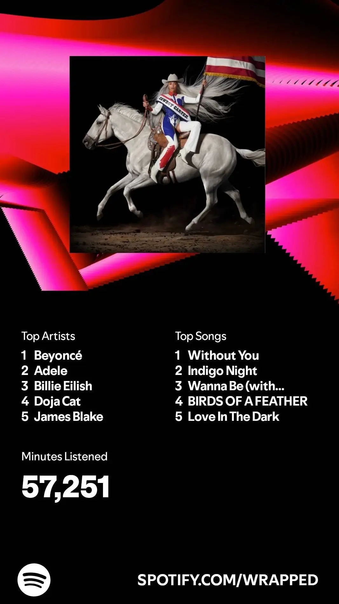

I thought I’d post my Spotify Wrapped on this corner of the internet this year and not just on social media.
It’s not Christmas, but it’s that time of the year to unwrap our music taste, discover how basic it is and have our egos crushed. Being a Wednesday, I expected Wrapped to drop any time soon but nothing came while I jealously watched Apple Music users share their Replay. As I drove back home, I kept wondering, who would end up on my list alongside Adele?
I have a list of albums to get to, be it to explore new artists or delve deeper into the discographies of some of my favourite musicians. Top on that was Pink Floyd’s The Dark Side Of The Moon and Radiohead’s In Rainbows and I managed to get to them. Saying I love them is a massive understatement because I absolutely devoured those two albums, I was definitely expecting them to make an appearance. Lo and behold, they did not make it.

I got home and my top two songs came as no surprise to me. I have a soft spot for ballads that I can learn from while stretching my vocal pipes — no wonder Adele is my favourite artist.
TEEKS has mentioned before that he listens to Adele and the inspiration is clear on Without You. He delivers an emotive performance with just the piano for accompaniment. The background vocals join in and they are just so ethereal and velvety like embracing a cloud, the same could be said of Tamino’s Arabian touches. I had never heard of Tamino before but Indigo Night and Habibi took over my life for some time. The writing, tender runs and other captivating vocal nuances have you in awe.
The simplicity in those songs make them stand out. I want to me close my eyes and get lost in their world as sounds envelope my ears.
The other top songs are:
- GloRilla - Wanna Be (with Megan Thee Stallion)
- Billie Eilish - BIRDS OF A FEATHER
- Adele - Love In The Dark
- and here's the full list.
I love Beyoncé and, retrospectively, it makes sense she appeared on my list but I did not expect her to top it. I was in disbelief until I realised she dropped COWBOY CARTER this year and I finally gave RENAISSANCE another go on top of my usual Beyoncé rotations. Clearly the data doesn’t lie, heck I was top 1% of her listeners.
Billie Eilish had quite an amazing year. HIT ME HARD AND SOFT was a masterpiece in my books with great production from FINNEAS. We get glimpses of Billie’s emotions with poignantly rich lyrics exploring different topics from love, sexuality, weight and everything in between. This is an album where something will deeply resonate with you.
I don’t have much to say about Doja Cat besides she’s a talented well-rounded artist. Mooo! is a satirical play on words and classic tunes while poking fun at the rap landscape of the time. You could say the track was childish, but it was fun. I still love it and that’s what got me onto her music back then.
James! James! James! My friends will probably tell you he’s the only artist I speak so much about besides the obvious one starting with an A. He’s my favourite male vocalist and producer of recent years with his angelic voice. I constantly revisit Friends That Break Your Heart which was my first full album from him. It’s the easiest entry point into his rich catalogue that stretches all the way back to his experimental electronic origins.
Perhaps this list wasn’t a surprise after all.
My top genres would probably have been Pop, Rap, R&B, Rock and EDM, in that order, if Spotify had included them this year. That’s just one of the disappointing misses of Spotify Wrapped 2024. Who would have guessed firing the entire office would be a detriment to them?
Anyway, what was on your Spotify Wrapped this year? And what would you definitively recommend I should listen to?
Here's my Top Songs of 2024 playlist.
Spotify Wrapped 2023 & 2022#
I won't retroactively post articles of my previous ones but here's the data, playlists and social media posts of the time.
2023#
| Top Songs | Top Artists |
|---|---|
| 1. RAYE - Escapism. (with 070 Shake) | 1. James Blake |
| 2. James Blake - Mile High (feat. Travis Scott) | 2. Metro Boomin |
| 3. Metro Boomin - Creepin' (with The Weeknd & 21 Savage) | 3. Doja Cat |
| 4. Frank Ocean - Pink + White | 4. Adele |
| 5. Metro Boomin - Metro Spider (with Young Thug) | 5. Rihanna |
| Minutes Listened: 56,787 | |
| Top Genre: Pop, Rap, Pop Dance, R&B, Alternative R&B | |
| Playlist: Top Songs of 2023 | |
| Social Media Posts: Tweet, Thread, Skeet 😂 |
2022#
I'm still shocked by the total minutes listened but I guess that's what endless hours of programming uni projects does to your stats.
| Top Songs | Top Artists |
|---|---|
| 1. James Blake - Life Is Not The Same | 1. Adele |
| 2. FKA Twigs - Two Weeks | 2. Kendrick Lamar |
| 3. Lil Dicky - Molly (feat. Brendon Urie of Panic at the Disco) | 3. Kanye West |
| 4. Elaine - You're the One | 4. Doja Cat |
| 5. Doja Cat - Streets | 5. James Blake |
| Minutes Listened: 117,052 🤯 | |
| Top Genre: Pop, Rap, Alternative R&B, EDM, Afropop | |
| Playlist: Top Songs of 2022 | |
| Social Media Posts: Tweet |
2018 - 2021#
Sadly, I just have the playlists from between 2018 and 2021 but not any other data. I can only recall that Adele topped the list every year and there was an increase in minutes listened every consecutive year.
With that, cheers ✌️.